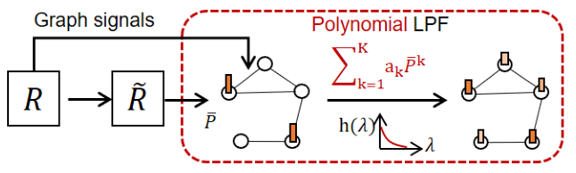
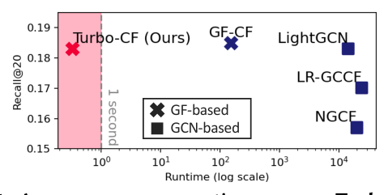

Turbo-CF: Matrix Decomposition-Free Graph Filtering for Fast Recommendation (免矩阵分解的多项式图滤波快速推荐)
- 会议/期刊: SIGIR 2024 (Short Paper, 5 pages)
- 作者与机构: Jin-Duk Park, Yong-Min Shin, Won-Yong Shin (Yonsei University)
- 推荐链路定位: 召回（全库打分）
- 研究方向: 图神经网络与知识图谱推荐 / 协同过滤与双塔召回
- 论文原文: https://arxiv.org/abs/2404.14243v1
- 开源代码: https://github.com/jindeok/Turbo-CF
TL;DR (1分钟核心速览)
图滤波协同过滤 (GF-CF) 虽免训练，但为构造理想低通滤波器必须对物品-物品相似图做特征分解，复杂度 \(O(|I|^3)\)，无法支撑实时推荐。Turbo-CF 用矩阵多项式\(\sum_k a_k\bar{P}^k\) 直接逼近任意频率响应，全过程只剩矩阵乘法，可在 GPU 上并行；配合非对称归一化与 Hadamard 幂次调边权，在 Gowalla/Yelp 上推理耗时从 GF-CF 的 2m33s 降至 0.3s（提速约 510×），Amazon-book 上 NDCG@20 反超 GF-CF 4.6%。
Background & Motivation (背景与核心矛盾)
- 主流范式: 一类工作是 GCN 式 CF (NGCF/LightGCN/LR-GCCF)，靠消息传递拟合高阶邻域，但必须离线训练；另一类是 GF-CF 等图滤波方法，用理想低通滤波器 \(\bar{U}\bar{U}^\top\) 直接平滑用户评分信号，无需任何训练即可达到 SOTA 精度。
- 前人局限: ① 理想 LPF 依赖 top-\(k\)奇异向量，必须做 SVD，代价\(O(|I|^3)\)，物品数上万即不可接受；② 该分解无法用 GPU 加速，且用户兴趣与交互流快速变化，模型需分钟级甚至秒级刷新，慢速滤波器在实时场景失效。
- 核心洞察 (Key Insight): 图滤波的本质只是"改特征值"而非"求特征向量"——只要频率响应 \(h(\lambda)\)合适，用\(\bar{P}\) 的多项式即可实现同样的谱变换，而多项式乘法天然是 GPU 友好的稠密矩阵乘。
- 本文切入点: 用 1–3 阶多项式 LPF 逼近理想 LPF，同时重新设计图构造（非对称归一化 + 边权幂次调节）弥补失去精确分解后的精度损失。
Method (核心方法设计)
1. 整体框架 (Overall Architecture)
先用非对称幂次归一化的评分矩阵 \(\tilde{R}\)构建物品相似图\(\bar{P}\)，再对其做 Hadamard 幂次调节边权；随后对每个用户的历史评分向量\(r_u\)施加\(K\)阶多项式低通滤波\(\sum_k a_k\bar{P}^k\)，一次矩阵乘法同时得到全部用户对全部物品的偏好分数\(S\)，按分数全库排序取 Top-\(N\)。训练阶段完全为空（无参数学习、无负采样、无反向传播），系数\(\{a_k\}\) 为先验设计或一次性数值拟合，滤波器类型仅在验证集上做离散选择。
flowchart TD
A["评分矩阵 R"] --> B["非对称归一化 R̃ = D_U^-α R D_I^(α-1)"]
B --> C["物品相似图 P̃ = R̃ᵀR̃ 与边权调节 P̄ = P̃^∘s"]
C --> D["多项式低通滤波 Σ a_k P̄^k"]
D --> E["全库打分 S = R · Σ a_k P̄^k → Top-N"]
2. 关键设计拆解 (Key Designs)
- 多项式图滤波替代特征分解（核心增量）：GF-CF 需 \(\bar{U}\bar{U}^\top\)实现理想 LPF，代价\(O(|I|^3)\)。本文注意到\(\bar{P}\)的特征分解\(\bar{P}=\tilde{U}\Lambda\tilde{U}^\top\)满足\(\bar{P}^k=\tilde{U}\Lambda^k\tilde{U}^\top\)，故任意多项式本身就是合法图滤波器，且频率响应有闭式解：
即只需设计标量函数 \(h(\cdot)\) 即可，无需触碰特征向量；整个打分是一次"矩阵乘-求和"，可完全交给 PyTorch/CUDA 并行，这正是 510× 提速的根源。
- 非对称归一化 + 边权幂次调节（精度补偿）：前人对称归一化 \(\tilde{R}=D_U^{-1/2}RD_I^{-1/2}\) 隐含"用户/物品流行度影响等价"的假设。本文改为
\(\alpha\)增大抑制高活跃用户、放大热门物品影响，\(s\)则整体缩放边权强度以匹配所选滤波器的平滑力度（高阶滤波器易过平滑）。实验显示最优\(\alpha=0.7\)、\(s=0.6\)，说明对称归一化 (\(\alpha=0.5\)) 与原始边权 (\(s=1\)) 均非最优，这一"零成本调参"是维持精度的关键。
- 三个即插即用的低通滤波器与训练/推理开销：为避免在验证集上盲目搜索高阶系数（并控制内存），作者固定 \(K\le 3\)给出三个预设：线性\(h(\lambda)=1-\lambda\)；二阶\(2\bar{P}-\bar{P}^2\)对应\(h(\lambda)=1-\lambda^2\)；以及对理想阶跃滤波器\(h(\lambda)=\mathbb{I}_{\lambda\le 0.1}\)做非线性最小二乘拟合得\(\hat{f}_\tau(\bar{P})=-\bar{P}^3+10\bar{P}^2-29\bar{P}\)，并与线性项组合为\(\bar{P}+\beta\hat{f}_\tau(\bar{P})\)。无损失函数、无负采样、无训练轮次，推理仅\(K\)次\(|U|\times|I|\)与\(|I|\times|I|\) 矩阵乘。
Experimental Setup & Evaluation Protocol (实验设置与评估协议)
- 数据集与预处理: 三个公开基准，未做 k-core 过滤，仅统计原始交互：
| 数据集 | #Users | #Items | #Interactions | 密度 | 场景说明 |
|---|---|---|---|---|---|
| Gowalla | 29,858 | 40,981 | 1,027,370 | 0.084% | LBSN 签到 |
| Yelp | 31,668 | 38,048 | 1,561,406 | 0.130% | 本地生活商户 |
| Amazon-book | 52,643 | 91,599 | 2,984,108 | 0.062% | 图书电商 |
- 数据划分与防穿越: 对每个用户按 70%/20%/10% 随机比例划分 train/test/validation，验证集仅用于超参 (\(\alpha,s,\beta\)) 与滤波器类型选择，测试集不参与任何调参。
- 排名评测协议: 属 Full-Ranking（全库未交互物品排序）——由 \(S=R\sum a_k\bar{P}^k\)直接对全部\(|I|\) 个物品打分后排序，不做负采样，避免采样偏差；指标为 Recall@20 与 NDCG@20。
- 对比基线与超参设置: 8 个基线覆盖四类——MF 类 (MF-BPR, NeuMF)、生成式 (Multi-VAE, DiffRec)、GCN 类 (NGCF, LightGCN, LR-GCCF)、图滤波类 (GF-CF)；GCN/MF 结果直接引用原文以保证公平，仅 DiffRec 重跑。关键超参 \(\alpha\in[0,1]\)、\(s\) 由验证集网格搜索，GPU 为 RTX A6000。
Key Experimental Results (实验关键数据)
1. 主实验对比 (Main Results)
| Method | Gowalla R@20 | Gowalla N@20 | Yelp R@20 | Yelp N@20 | Amazon R@20 | Amazon N@20 |
|---|---|---|---|---|---|---|
| MF-BPR | 0.1291 | 0.1109 | 0.0433 | 0.0354 | 0.0250 | 0.0190 |
| NeuMF | 0.1399 | 0.1212 | 0.0451 | 0.0363 | 0.0258 | 0.0200 |
| Multi-VAE | 0.1641 | 0.1335 | 0.0584 | 0.0450 | 0.0407 | 0.0315 |
| DiffRec | 0.1653 | 0.1417 | 0.0656 | 0.0552 | OOM | OOM |
| NGCF | 0.1570 | 0.1327 | 0.0579 | 0.0477 | 0.0344 | 0.0263 |
| LightGCN | 0.1830 | 0.1554 | 0.0649 | 0.0530 | 0.0411 | 0.0315 |
| LR-GCCF | 0.1701 | 0.1452 | 0.0604 | 0.0498 | 0.0375 | 0.0296 |
| GF-CF | 0.1849 | 0.1518 | 0.0697 | 0.0571 | 0.0710 | 0.0584 |
| Turbo-CF | 0.1835 | 0.1531 | 0.0693 | 0.0574 | 0.0730 | 0.0611 |
| Improv. | −0.8% | −1.5% | −0.6% | +0.5% | +2.8% | +4.6% |
运行时间（Gowalla，同硬件）：NGCF 6h34m15s（训练）、LightGCN 4h1m9s（训练）、GF-CF 2m33s（前向）、Turbo-CF 0.3s / 5.6s / 5.8s（三种滤波器）。

2. 消融实验 (Ablation Study)
论文以"滤波器阶数"作为主要消融维度（Turbo-CF-1/2/3 分别为线性、二阶、理想 LPF 多项式逼近）：
| 变体 | Gowalla 耗时 | Gowalla R@20 | Yelp 耗时 | Yelp R@20 | Amazon 耗时 | Amazon R@20 |
|---|---|---|---|---|---|---|
| Turbo-CF-1 (线性) | 0.32s | 0.1823 | 0.31s | 0.0689 | 27.9s | 0.0730 |
| Turbo-CF-2 (二阶) | 5.59s | 0.1740 | 4.80s | 0.0693 | OOM | OOM |
| Turbo-CF-3 (逼近理想) | 5.79s | 0.1835 | 4.82s | 0.0689 | OOM | OOM |
3. 关键实验发现 (Key Findings)
- 矩阵分解几乎是"无用开销"：线性滤波器 Turbo-CF-1 在 Gowalla 已达 0.1823 Recall，仅比二维逼近的 Turbo-CF-3 (0.1835) 低 0.6%，却快 18×；相对 GF-CF 的 0.1849 仅差 0.8% 召回，而耗时从 2m33s 降到 0.3s——说明 GF-CF 中 \(O(|I|^3)\) 的 SVD 买到的精度极其昂贵。
- 高阶滤波器并非单调增益，且存内存瓶颈：Gowalla 上最优是 Turbo-CF-3、Yelp 上最优是 Turbo-CF-2 (0.0693)、Amazon-book 上最优反为一阶（高阶直接 OOM）——因 \(\bar{P}^k\) 需将高维稠密矩阵驻留显存；作者建议用 Strassen 或子矩阵分块缓解，这也意味着该方法的"免分解"优势随物品规模增长会被显存反噬。
- 图构造的调参收益可量化且不可忽略：在 Gowalla 上把归一化指数从对称的 \(\alpha=0.5\)调到\(0.7\)、边权从\(s=1\)调到\(0.6\)，是 Turbo-CF 在失去理想 LPF 后仍能追平 GF-CF 的主要原因；换言之，两个标量超参大致"抵偿"了特征分解带来的谱截断能力。
Highlights & Limitations (亮点、对比与审稿批判)
- 与代表作对比 (vs. Prior Work): 与 LightGCN 等 GCN-CF 相比，本文彻底去掉训练（4 小时 → 0.3 秒），精度在 Gowalla 上仅低 1.5% NDCG；与最相关的 GF-CF 相比，二者精度差距在噪声范围内，但本文用"多项式谱近似"替换了"精确谱截断"，把算力瓶颈从 SVD 转移到 GPU 稠密乘，工程意义远大于精度意义。
- 可迁移亮点: ① "用多项式逼近任意频率响应 \(h(\lambda)\)、且\(h\)有闭式表达"这一技巧可直接迁移到 LightGCN 的传播核设计或时序图滤波；② 非对称归一化\(D_U^{-\alpha}RD_I^{\alpha-1}\)+ Hadamard 幂次\(\bar{P}^{\circ s}\) 是一套极低成本（2 个标量）的图重加权方案，可插入任何基于相似图的方法。
- 审稿级局限批判: ① 评测仅 3 个中等规模数据集、单一 70/20/10 随机划分，缺少时间切分与冷启动划分，未验证"用户兴趣快速漂移"这一核心动机场景下的实际收益；短论文亦无显著性检验；② 声称"矩阵分解免了"，但功率迭代 \(\bar{P}^k\)在高阶时仍达\(O(K|I|^2)\)稠密乘并引发 Amazon-book OOM，可扩展性证据不足；③\(\alpha,s\) 仍需验证集网格搜索，与"秒级实时刷新"叙事存在张力，且论文未报告滤波器系数拟合的稳定性。
Rating (四维评分)
- 方法创新性 (Novelty): ⭐⭐⭐⭐ （把谱域图滤波从"求特征向量"重构为"设计标量频率响应"，视角简洁优雅，但多项式滤波本身在信号处理中属经典工具，迁移增量大于理论增量）
- 评估协议与实验扎实度 (Protocol & Experiments): ⭐⭐⭐ （Full-Ranking 无采样偏差、基线覆盖四大类且耗时对比充分，但仅 3 数据集、单一随机划分、无显著性检验，长尾/稀疏分桶分析缺失）
- 写作与数学规范度 (Clarity & Rigor): ⭐⭐⭐⭐ （定理 3.1 给出频率响应闭式解、三个滤波器推导清晰，可惜证明因页数限制被省略，复杂度分析偏薄）
- 工业落地与复现价值 (Industrial & Practical Value): ⭐⭐⭐⭐⭐ （代码开源、无训练无负采样、亚秒级前向，天然适配需要分钟级模型刷新的信息流与本地生活召回场景）